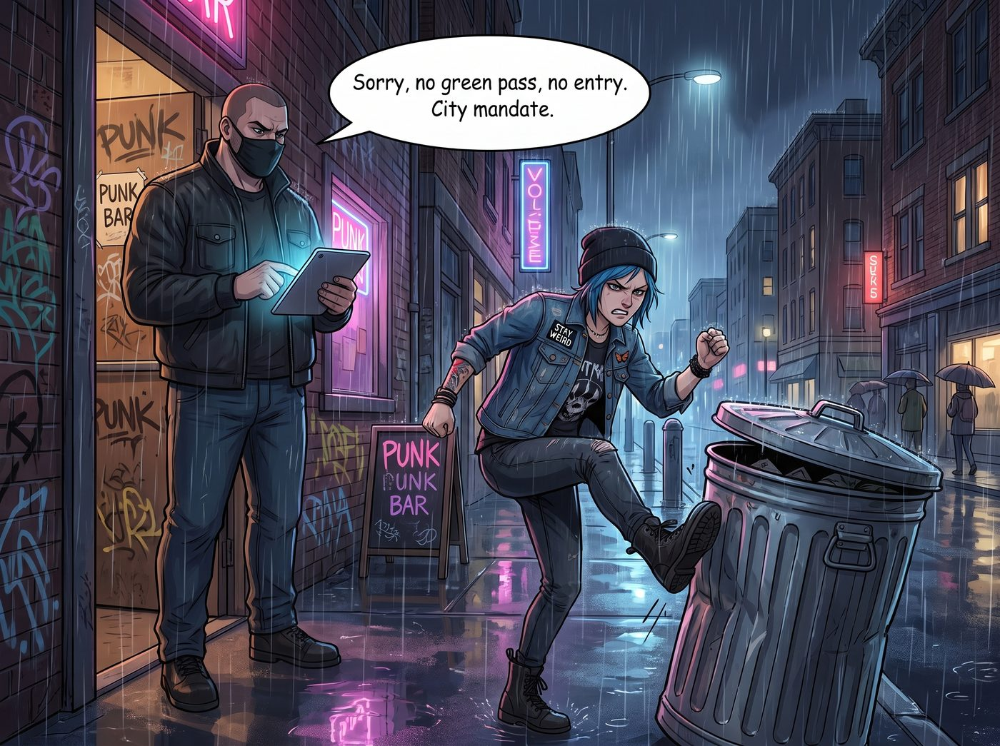

數位賤民

西雅圖國會山莊的雨夜，比以往任何時候都要冰冷。
Chloe 狠狠地一腳踹在路邊的鐵皮垃圾桶上，發出一聲沉悶的巨響。而在她身後，那間她以前閉著眼睛都能走進去的地下龐克酒吧門口，站著一個戴著黑色口罩、手裡拿著平板電腦的保鑣。
「抱歉，沒有綠色通行碼，不准入內。市府的強制令。」保鑣的語氣毫無波瀾，像一台沒有感情的讀卡機。
一、與系統的絕對隔離
如果是以前，Chloe 有一百種方法搞定這個局面。她可以套近乎、可以塞二十塊美金、甚至可以挑釁對方引發一場混亂然後趁機溜進去。但現在，她的嘴砲技能在冰冷的演算法面前徹底失效了。保鑣不在乎她的態度，甚至不在乎她給不給錢，因為只要平板的鏡頭掃不到那個該死的QR Code，酒吧的電子門禁就不會解鎖。
這不是人與人的對抗，這是人與系統的絕對隔離。
「我們開了三個小時的車來這裡，就為了聽一場見鬼的地下Live，結果你告訴我，因為我們沒有把政府的追蹤液體打進血管裡，我們連買杯劣質啤酒的資格都沒有？！」Chloe 怒不可遏地指著保鑣的鼻子。
Max 戴著一個有些大的醫用口罩，不安地拉了拉 Chloe 的皮夾克袖子，聲音隔著口罩顯得悶悶的：「算了吧，Chloe……我們去買個得來速，然後回車上吧。街上的人都在看我們。」
確實，這座曾經以叛逆和自由著稱的城市，此刻正用一種極度排斥的眼神打量著她們。路過的行人戴著雙層口罩，看到沒有戴口罩、也沒有準備掏出手機掃碼的 Chloe，紛紛像躲避瘟疫一樣繞開，眼神中充滿了警惕與鄙夷。
在這個被疫情重塑的2021年，不打針的 Chloe 和還在觀望的 Max，成了這座鋼筋水泥叢林裡的數位賤民。大城市的每一扇門、每一間餐廳、甚至每一間公共廁所，都對她們落下了物理與數據的雙重閘門。
二、路人的舉報
兩個小時後，猛禽皮卡帶著滿車廂的挫敗感，灰溜溜地逃回了奧林匹亞半島的邊緣小鎮。
但在她們準備把車停進二號車廂的營地時，麻煩卻主動找上了門。
一輛銀色的 Prius 停在營地外圍的泥濘路上。一個穿著瑜伽褲、戴著透明防護面罩和N95雙重防禦的大媽，正舉著手機對著皮卡車狂拍。
「就是妳們！鎮上那家超市的收銀員跟我說了，妳們這兩個從城裡來的流浪漢，剛才買啤酒的時候居然沒有戴口罩！」大媽尖銳的聲音穿透了雨夜，「妳們知不知道現在是緊急狀態？妳們這種反智的自私鬼、移動的生化武器，會把病毒傳染給我們整個社區！我已經報警了，警察五分鐘後就到，他們會把妳們的房車拖走！」
Chloe 的怒火在西雅圖憋了一整晚，此刻終於找到了宣洩口。她猛地推開車門，從座椅底下抽出一根棒球棍，眼神兇狠得像一頭被逼到絕路的狼。
「妳再用那個破手機拍我一下試試，信不信我把妳的面罩和手機一起砸進泥巴裡？！」Chloe 大吼著步步逼近。
大媽顯然沒想到這個藍髮女孩會這麼暴躁，嚇得往後退了一步，但嘴裡依然不依不饒：「暴力狂！我要告妳恐嚇！妳們這些不打疫苗的下等人就該被隔離管制！」
三、收斂後的行政恐嚇
「Chloe 學姐，請放下棒球棍，這會構成三級蓄意襲擊的實體證據。」
車廂的升降甲板上，Lily 撐著一把黑色的直骨傘，幽靈般地出現了。她依然穿著那件米色針織衫，圓框眼鏡在手電筒的光芒下泛著冷光。她沒有戴口罩，手裡只拿著一個印有聯邦徽章的藍色文件夾。
Lily 踩著泥濘走到 Chloe 身邊，輕輕按下她手裡的棒球棍，然後轉身面向那個正在大呼小叫的大媽。
「晚上好，女士。我是這個能源實驗專案的首席法務執行官。」Lily 的聲音溫柔得滴水不漏，卻透著一股令人毛骨悚然的官方威壓，「請問您剛才說，您已經報警了，是嗎？」
「沒錯！警察馬上就來抓妳們這些防疫漏洞！」大媽虛張聲勢地舉著手機。
「那真是太遺憾了。」Lily 推了推眼鏡，打開手裡的文件夾，抽出一張帶有能源部浮水印的文件，遞到大媽的防護面罩前。
「女士，這片場地目前正配合能源部進行一項為期數月的『次世代太陽能陣列環境測試』。」Lily 用最甜美的聲音，唸出最冰冷的法條，「根據測試協議附帶的場地安全條款，未經授權的第三方在測試期間擅自進入或干擾場地周邊，可能需要對設備造成的任何延誤損失負連帶法律責任。」
大媽愣住了，手機的錄影鍵依然按著，但手卻開始微微發抖。「妳……妳在胡說什麼……」
Lily 沒有理會她，繼續用平靜的語氣推進：「也就是說，您現在的行為，已經涉及干擾一項受政府監管的測試專案。如果您堅持要執法介入，我建議您先想清楚，等治安官到場後，需要花多少時間釐清這件事，還有您是否願意在筆錄裡留下『無故指控無辜住戶』的紀錄。」
Lily 微微一笑，眼神裡沒有一絲溫度：「請問，需要我為您說明這份文件的具體條款嗎？」
大媽的臉在N95口罩下瞬間漲成了豬肝色。她看了看那張蓋著印章的文件，又看了看那些在黑暗中安靜運轉的太陽能板，大腦中那個屬於小鎮道德警察的底層邏輯開始動搖。
「瘋子……妳們都是一群瘋子！」大媽連滾帶爬地鑽回了 Prius 裡，連車燈都忘了開，一腳油門踩到底，在泥濘中狂飆著逃離了現場。
四、絕對安全的土地
Max 站在皮卡旁邊，驚訝得下巴都快掉下來了。
Chloe 看了看絕塵而去的 Prius，又看了看 Lily 手裡那份文件，狠狠地嚥了一口唾沫。
「那份文件……是真的嗎？」Chloe 覺得自己的聲音有點沙啞。
「文件本身是真的，這個測試專案也確實存在。」Lily 乖巧地把文件收好，轉過身，「我只是加上了一點主觀的行政延伸解釋，稍微誇大了它的嚇阻力。畢竟，恐嚇一個只看有線新聞台的郊區婦女，並不需要動用什麼誇張的手段，只需要給她一個她大腦無法完全消化的政府名詞就足夠了。」
Lily 撐著傘，看著被大城市徹底拒之門外的 Chloe 和 Max，語氣中帶著一絲不易察覺的憐憫：
「Chloe 學姐，外面的世界正在建立一套基於生物數據的全新門禁系統。妳的叛逆在演算法面前毫無價值。但只要妳還站在這片二號車廂的土地上……」
Lily 推了推眼鏡，雨水順著黑色的傘骨滴落：「妳就是絕對安全的。」